Contents
Compute propulsion mass for a continuous trajectory solution.
Demonstrate that a different burn policy can produce a lower system mass. The propulsion mass is assumed to be linear with impulse of the individual burn with the maximum impulse.
This is a demonstration of how the output of IntegrateBurnPolicyContinuous and AccelFromPolicyContinuous can be analyzed to determine the required propulsion system mass.
See also: AccelFromPolicyContinuous, IntegrateBurnPolicyContinuous, PlotTrajectoryContinuous, MassContinuousLinear
%--------------------------------------------------------------------------- % Copyright (c) 2019 Princeton Satellite Systems, Inc. % All rights reserved. %--------------------------------------------------------------------------- % Key propulsion system parameters Isp = 1000; accel0 = 1e-6; % km/s2 % Default elements are LEO to GEO dAcceleration = AccelFromPolicyContinuous; % default burn policy (true anomaly): dAcceleration.ap = 1.5708; % at perigee, to control apogee dAcceleration.per = [0 0 0 0 0.5236 0.5236 0.5236]; % at apogee dAcceleration.inc1 = [0 0 0 0 0.5236 0.5236 0.5236]; dAcceleration.inc2 = 0; dSimulation = IntegrateBurnPolicyContinuous; dAcceleration.aMag = accel0; dAcceleration.Isp = Isp; dAcceleration.tMax = 5*4500000; dSimulation.tMax = 5*4500000;
Run the integration
accelFun = @AccelFromPolicyContinuous;
[xOut,tOut] = IntegrateBurnPolicyContinuous( dSimulation,accelFun,dAcceleration);
PlotTrajectoryContinuous(xOut,tOut,dSimulation.el1);
% Compute the system mass to achieve the trajectory
data = PropSystemDataStructure;
data.iSp = dAcceleration.Isp;
data.propData.sigma = 50;
MassContinuousLinear( tOut, xOut, data);
ODE int percentage: 0. 10. 20. 30. 40. 50. 60. 70. 80. 90. 100. 86.4417 sec The ode solver picked 202032 points. All elements agree! Propulsion: 4620.42 Ns (92.4084 kg) Dry Mass: 107.011 kg Wet Mass: 289.548 kg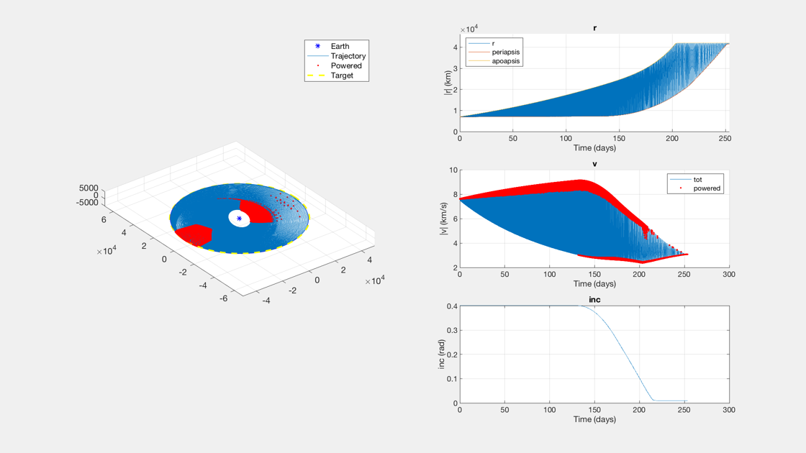 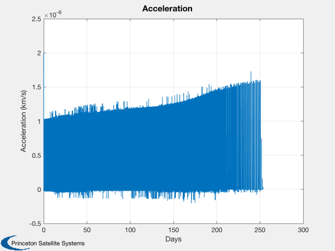 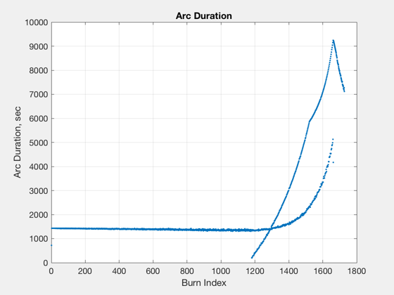 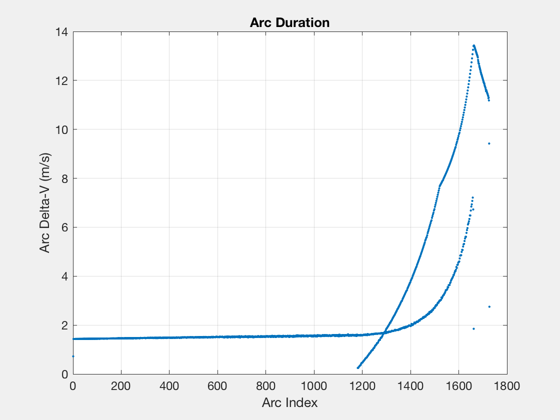 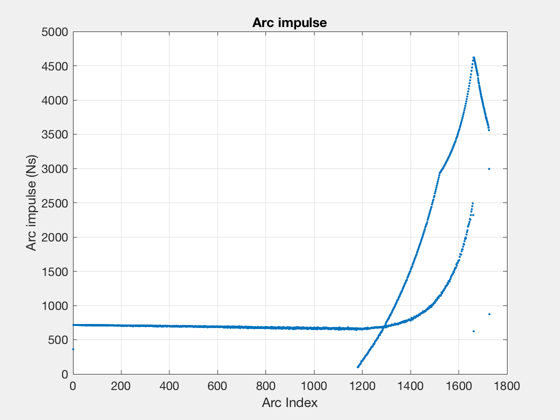 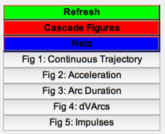
run with a different burn policy that results in lower mass
dAcceleration2 = dAcceleration; dAcceleration2.ap = 1.2*[1 1]; dAcceleration2.per = [pi/6 pi/12]; dAcceleration2.inc1 = [0 pi/6]; dAcceleration2.inc2 = 0; % remake handle with new data structure [xOut2,tOut2] = IntegrateBurnPolicyContinuous( dSimulation,accelFun,dAcceleration2); PlotTrajectoryContinuous(xOut2,tOut2,dSimulation.el1); MassContinuousLinear( tOut2, xOut2, data); %--------------------------------------
ODE int percentage: 0. 10. 20. 30. 40. 50. 60. 70. 80. 90. 100. 91.4887 sec The ode solver picked 216070 points. All elements agree! Propulsion: 3287.3 Ns (65.7459 kg) Dry Mass: 81.6778 kg Wet Mass: 280.826 kg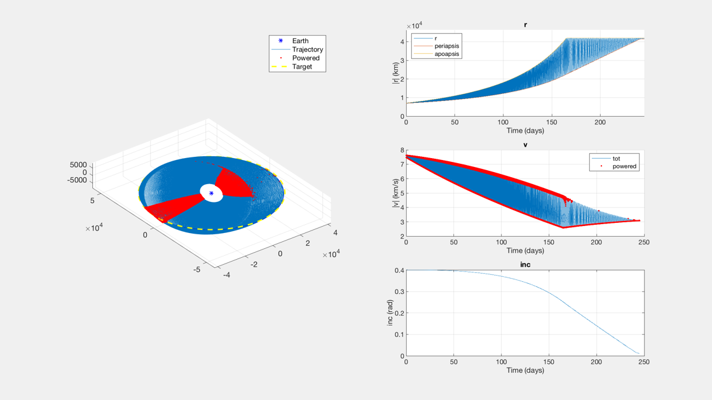 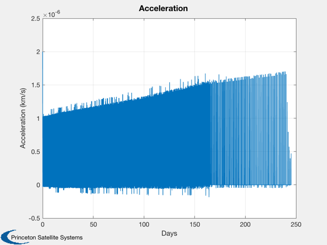 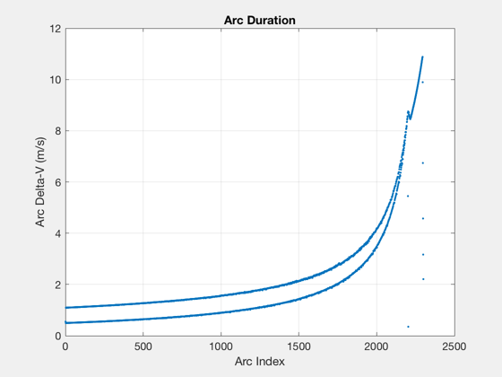 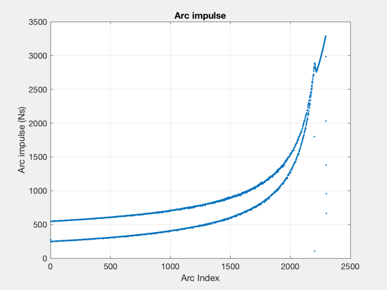 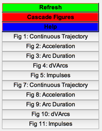